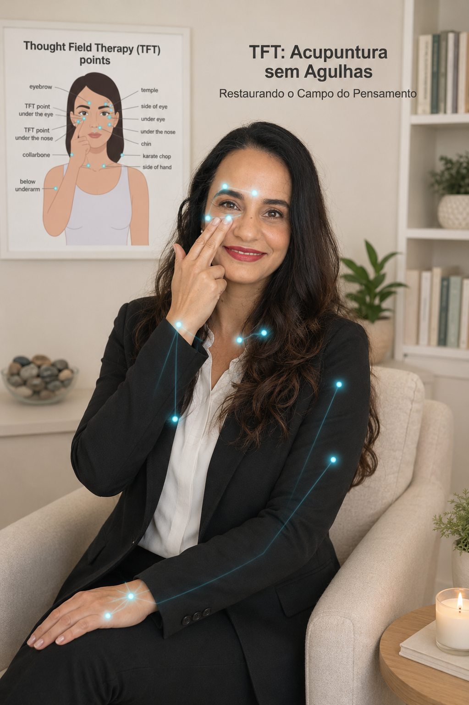

Ajude pessoas a superar ansiedade, medos, traumas e bloqueios emocionais utilizando uma técnica reconhecida internacionalmente — e torne-se um Terapeuta de TFT certificado.
Transforme vidas. Transforme a sua história.
- Aulas 100% online
- Certificação reconhecida
- Suporte e acompanhamento

O mercado está mudando — e quem fica parado, fica para trás
Cada vez mais pessoas buscam ajuda para lidar com ansiedade, medos e traumas — e faltam profissionais preparados para atender essa demanda.
Terapias tradicionais muitas vezes levam meses para mostrar resultado, o que frustra tanto o profissional quanto o cliente.
Sem uma técnica diferenciada, fica difícil se destacar em um mercado cada vez mais concorrido.
O que é TFT?
A Thought Field Therapy (TFT ou Terapia do Campo do Pensamento, em português) é uma metodologia criada pelo psicólogo americano Ph.D. Dr. Roger Callahan que utiliza sequências específicas de estimulação de pontos de acupuntura para reduzir rapidamente a intensidade de emoções como ansiedade, medo, culpa, tristeza, traumas e perturbações emocionais, físicas e psicológicas de todo tipo.
Hoje, milhares de terapeutas em diversos países utilizam a TFT em consultório com excelentes resultados.
Ver o Conteúdo CompletoImagine daqui a alguns meses...
- Aplicando protocolos de TFT com segurança e clareza
- Atendendo clientes com resultados mais rápidos e visíveis
- Com uma técnica a mais no currículo, te diferenciando no mercado
- Ampliando sua renda com um serviço de alto valor percebido
- Cuidando de si e das pessoas que você ama
Benefícios da Formação
Certificação reconhecida internacionalmente e pelo MEC
100% online e ao vivo
Material didático atualizado
Suporte especializado
Acesso às gravações, sem pressa
Treinamento supervisionado em atendimentos reais
Para quem é esta formação?
- Psicólogos
- Terapeutas Integrativos
- Coaches
- Profissionais da Saúde
- Educadores
- Pessoas que desejam iniciar uma nova profissão
- Quem deseja ampliar seus atendimentos com uma técnica baseada na conexão entre emoções e corpo
- Para quem deseja apenas cuidar de si e das pessoas que ama
Do zero à certificação, em 4 passos simples
Faça sua Matrícula
Garanta sua vaga com pagamento facilitado.
Receba Acesso Imediato
Entre na plataforma e já acesse os bônus disponíveis.
Assista às Aulas
Ao vivo ou assista às gravações.
Receba seu Certificado
Conclua a formação e comece a atender.
O que você vai aprender
Uma trilha completa, do fundamento teórico à prática clínica, para você sair pronto para atender com segurança.
Módulos da Formação
- 01 Postura do Terapeuta
- 02 Os Fundamentos da TFT
- 03 Dominando os Algoritmos
- 04 Eliminando as Reversões Psicológicas
- 05 Primeiros Atendimentos
- 06 Tratando Ansiedade, Pânico e Fobias
- 07 Aplicações Clínicas Especiais
- 08 Recursos Avançados da TFT
- 09 Ciência e Evidências
- 10 Aperfeiçoamento Clínico
- 11 Certificação e Próximos Passos
- 12 Laboratório de Supervisão de Atendimentos
Resultados já nas primeiras aplicações
 Antes
Antes
Uma certificação em que você pode confiar
Esta formação é reconhecida por três instituições, o que garante validade e credibilidade ao seu certificado.
Callahan Techniques (EUA)
Instituição americana que originou a TFT, fundada pelo próprio Dr. Roger Callahan.
UNIFATEC · MEC
Curso reconhecido pelo MEC com certificado emitido pela UNIFATEC, como extensão universitária, com validade em todo o território nacional.
Instituto TFT Brasil
Referência nacional na formação e atualização de terapeutas de TFT no Brasil.
O que nossos alunos dizem
"A TFT mudou completamente minha forma de atender. Resultados que antes levavam meses, hoje vejo em poucas sessões."
"Já na primeira semana consegui aplicar em clientes e ver mudanças incríveis."
"Uma formação extremamente prática, objetiva e transformadora. Recomendo de olhos fechados."
"O suporte da Fernanda é diferenciado. Me sinto segura para atender com a TFT."
Fernanda Pires
Terapeuta Integrativa, especialista em Saúde e Práticas Integrativas pela escola de medicina da PUC-RS, professora de TFT e MBA em Gestão em Saúde Mental Corporativa.
- Formadora de terapeutas
- Coordenadora de programas de regulação emocional
- Mais de 9 anos de experiência
- Mais de 1.000 atendimentos realizados
- Centenas de vidas transformadas
Meu compromisso é ensinar a Terapia do Campo do Pensamento com clareza, profundidade e responsabilidade, formando terapeutas seguros para promover saúde emocional com confiança. E essa jornada começa em você.
Por que essa formação é diferente
A Formação Internacional em Terapia do Campo do Pensamento (TFT) — Nível 1 foi desenvolvida para oferecer muito mais do que o ensino de uma técnica. Nosso propósito é formar pessoas preparadas para cuidar de pessoas com conhecimento, ética, responsabilidade e segurança.
Você aprenderá muito mais do que uma técnica
Mais do que memorizar protocolos, você compreenderá quando, como e por que utilizar a Terapia do Campo do Pensamento (TFT), desenvolvendo raciocínio clínico, postura ética e segurança para aplicar o método de forma responsável.
Formação voltada para a prática
O conhecimento é consolidado por meio de exercícios e experiências práticas durante a formação, para que você desenvolva confiança na aplicação da técnica.
Laboratório de Supervisão (Bônus Exclusivo)
Após a formação, você continuará praticando em um ambiente seguro, realizando trocas de atendimento entre colegas ou convidados, com supervisão da professora.
Essa experiência reduz inseguranças, fortalece o aprendizado e amplia sua confiança para atender.
Formação para diferentes objetivos
Esta formação foi pensada tanto para quem deseja construir uma nova atuação profissional quanto para terapeutas e profissionais da saúde que desejam ampliar seus recursos de atendimento.
Também é indicada para pessoas que querem aprender uma metodologia séria para cuidar de si mesmas, de familiares e de pessoas próximas.
Certificações que agregam credibilidade
Ao concluir a formação, você receberá:
- Certificação Internacional pela Callahan Techniques.
- Certificado de Extensão Universitária, com reconhecimento do MEC, através da UNIFATEC.
- Certificação pelo Instituto TFT Brasil.
Um conjunto de certificações que reforça a qualidade da formação e valoriza sua trajetória profissional.
Material didático completo
Você terá acesso a apostila, slides das aulas e materiais de apoio cuidadosamente preparados para facilitar seus estudos e servir como referência após o término da formação.
Aprendizado com acompanhamento
Além das aulas ao vivo, você contará com gravações para rever o conteúdo, grupo exclusivo de alunos para interação e apoio, além de plantões para esclarecimento de dúvidas.
Você não estará sozinho durante sua jornada de aprendizagem.
Uma formação baseada em conhecimento, ética e cuidado
Nossa missão vai além de ensinar a Terapia do Campo do Pensamento (TFT).
Queremos formar pessoas capazes de acolher, compreender e cuidar do outro com responsabilidade, respeito e compromisso com a saúde emocional.
Porque acreditamos que transformar conhecimento em cuidado é a forma mais eficaz de multiplicar o bem que podemos fazer às pessoas.
Garantia Incondicional
Você tem 7 dias de garantia. Faça sua inscrição, assista as primeiras aulas e, se perceber que a formação não é para você, basta solicitar o reembolso dentro do prazo.
Sem burocracia. Sem perguntas.
Bônus Exclusivos
Adeus Dores, com Leandro Precário
R$ 997,00Supere Sua Ansiedade, com Leandro Precário
R$ 997,00Meditação Potencializada com TFT, com Leandro Precário
R$ 997,00Lives mensais com a professora, de tira-dúvidas
Aula e E-book: "Como estruturar seu primeiro atendimento"
R$ 147,00Laboratório de Supervisão de Treinamento entre os alunos
R$ 997,00Vaga garantida de 2 meses no Programa Terapêutico Acalme Seu Coração
R$ 194,00Grupo exclusivo dos alunos
Formação TFT Nível 1
Algoritmos
- Formação completa
- Apostila exclusiva
- Protocolos oficiais
- Certificado reconhecido
- Acesso às gravações por 2 anos
- Laboratório de Treinamento
- Todos os outros bônus acima
Ainda com dúvidas? Aqui estão as respostas mais comuns
Não. A formação é aberta a psicólogos, terapeutas integrativos, coaches, profissionais da saúde, educadores e qualquer pessoa que deseje aplicar a TFT.
Sim. Ao concluir os 12 módulos, você estará apto a aplicar os algoritmos da TFT Nível 1 em atendimentos.
Sim. A formação foi estruturada para ensinar desde os fundamentos, então quem está começando do zero também consegue acompanhar.
Sim. Você tem acesso às gravações e pode assistir no seu ritmo, quantas vezes quiser.
Sim, ao concluir a formação você recebe o certificado oficial da Formação TFT Nível 1 — Algoritmos.
Sim! Você recebe certificação vinculada ao Instituto TFT Brasil, reconhecimento internacional pela Callahan Techniques e certificação emitida pela UNIFATEC, instituição credenciada pelo MEC.
Essa é sua chance de se tornar um Terapeuta de TFT certificado
- Certificação reconhecida
- Acesso imediato
- Suporte durante e após o curso
- Garantia de 7 dias
As vagas para esta turma são limitadas.